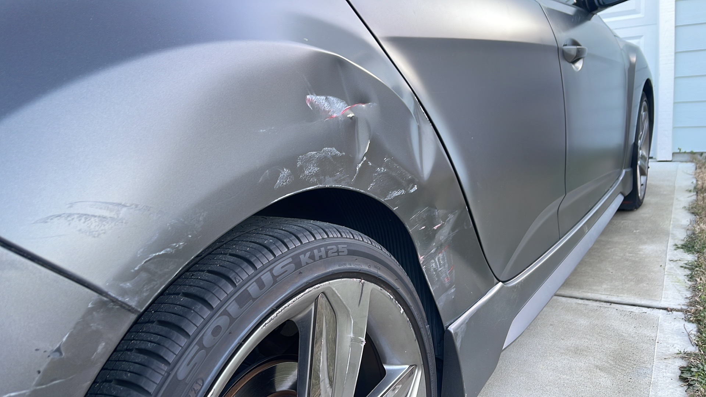

BUMPERS · FENDERS · PANELS
Repair the
details.
Small body damage can throw off the whole look of a vehicle. Call about bumper, fender, mirror and panel repairs.
CALL 910.392.4777 ↗
THE PART THAT GOT HIT
From a bumper to a side panel.
Customer reviews mention repairs and replacements involving fenders, bumpers, tail lights and side mirrors. The best fix depends on the vehicle, the part and what is damaged underneath. Bring the car by or call to ask what the shop recommends next.
- Bumper and fender repair or replacement
- Door and body panel damage
- Mirror and light replacement questions
- Cosmetic damage after a parking-lot mishap
Photos can help explain what happened, but an in-person look may be needed to confirm the repair.
Describe the damage.
We'll help you figure out what to ask next.